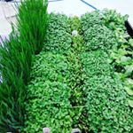

KC Microgreens - Your source for fresh, locally grown microgreens
Products
Microgreens 101
Recipes
About Us
Contact
Follow Us
Upcoming Events
December 24: Christmas Eve
December 25: Christmas Day
December 31: New Year's Eve
January 1: New Year's Day
Place an order through our partners at Koenig and Hill
Read our blog